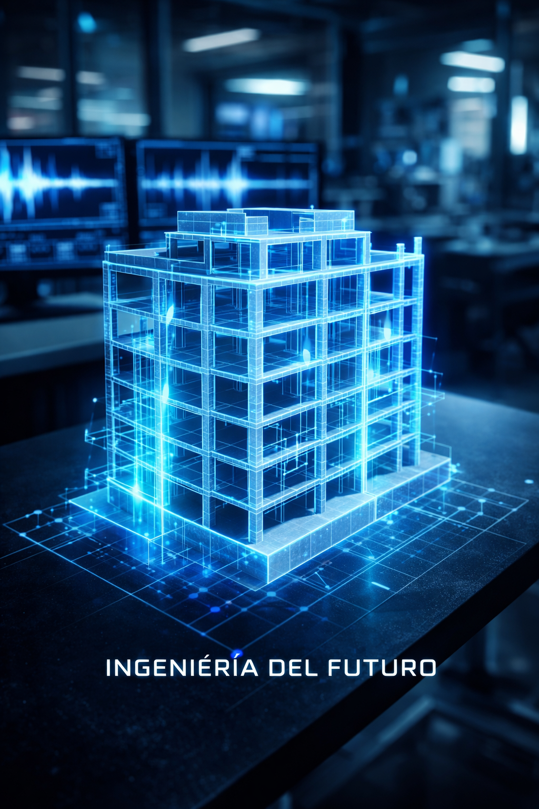
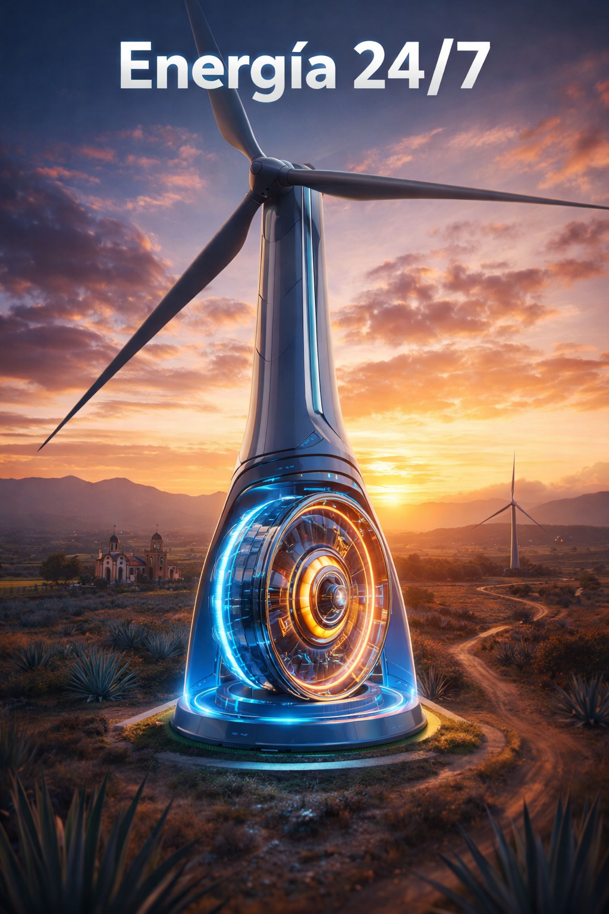
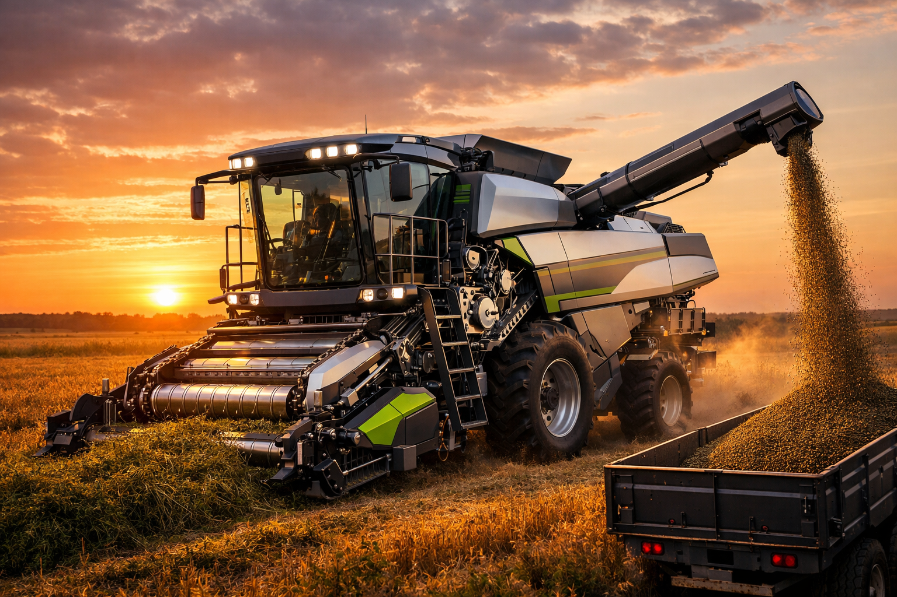
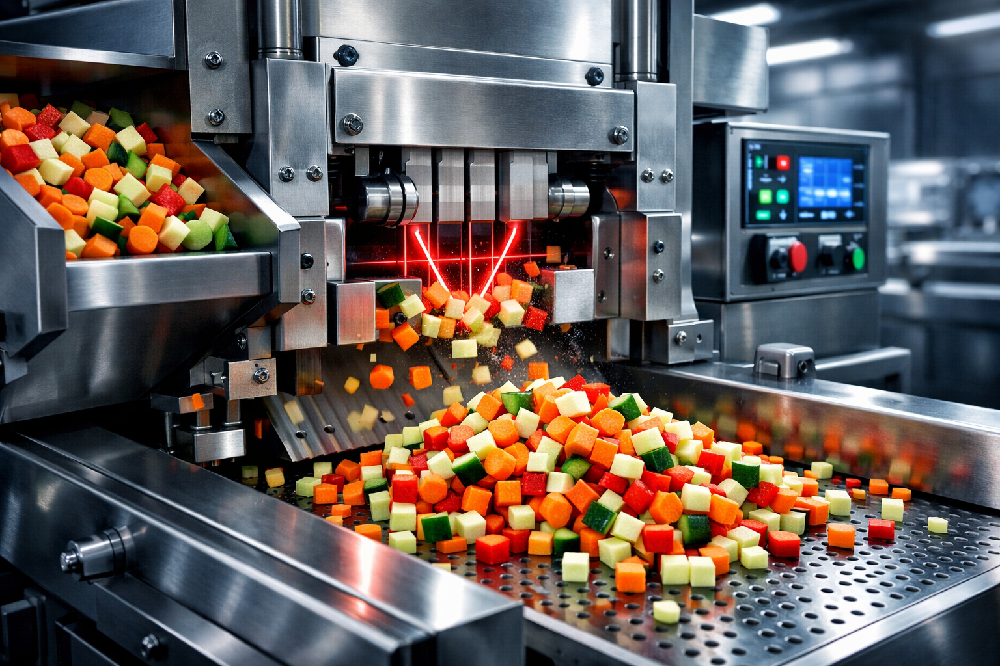

Patentes IMPI (6/6)

Ortesis Inteligente para Rehabilitación
Dispositivo tipo pistola para el fortalecimiento de la pinza de agarre tridimensional.
🔊 Escuchar Innovación

Patente IMPI
Modelo 3D de Ingeniería Estructural
Modelo impreso en 3D para el análisis de ingeniería estructural.
🔊 Escuchar Innovación

Patente IMPI
Torre Eólica con Volante de Inercia
Diseño de torre eólica con sistema de almacenamiento de energía cinética.
🔊 Escuchar Innovación

Patente IMPI
Trilladora de Alfalfa de Alto Rendimiento
Máquina agrícola diseñada para la separación eficiente de semillas de alfalfa.
🔊 Escuchar Innovación
Patente IMPI
Proceso para Avena Instantánea
Método innovador para la producción de avena instantánea.
🔊 Escuchar Innovación

Patente IMPI
Cubicadora de Alimentos
Dispositivo para el corte uniforme de alimentos.
🔊 Escuchar Innovación